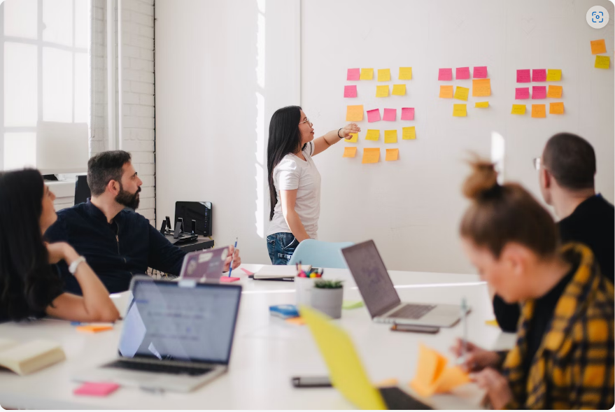
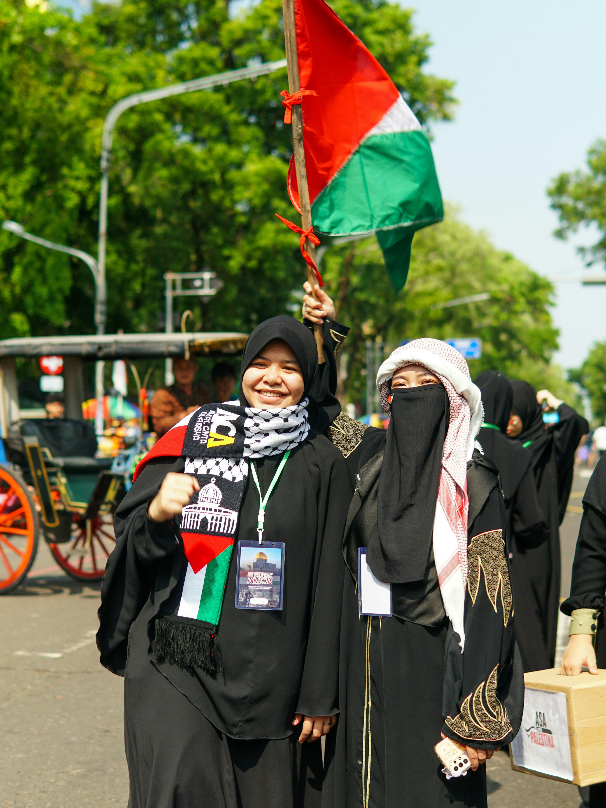
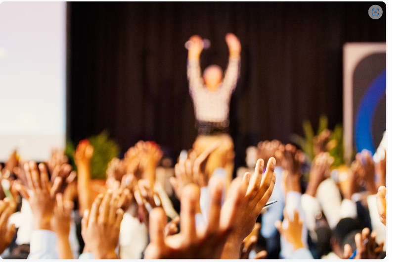
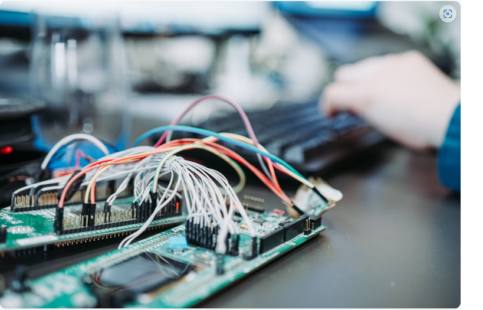

SEMUA KEGIATAN
Berbagai kegiatan yang telah kami selenggarakan dalam upaya
memperkuat gerakan anti korupsi.

Kasus Korupsi meningkat di Sektor Pendidikan
Laporan terbaru mengungkap peningkatan signifikan kasus korupsi di sektor pendidikan selama tahun terakhir.
📅 10 Mei 2024
📍 Ahmad Fauzi
👥 2,430 Peserta
📍 Ahmad Fauzi
👥 2,430 Peserta

Inovasi Digital dalam Pengawasan Dana Publik
Platform digital baru dikembangkan untuk meningkatkan transparansi dan pengawasan dalam pengelolaan dana publik.
📅 23 April 2024
📍 Dina Pratiwi
👥 1,826 Peserta
📍 Dina Pratiwi
👥 1,826 Peserta

Gerakan Mahasiswa Anti Korupsi makin masif
Gerakan mahasiswa anti korupsi semakin meluas dengan kampanye kreatif di berbagai kampus seluruh Indonesia.
📅 07 Maret 2024
📍 Budi Santoso
👥 3,102 Peserta
📍 Budi Santoso
👥 3,102 Peserta

Studi Kasus: Keberhasilan Reformasi anti Korupsi di Daerah
Beberapa daerah di Indonesia berhasil menurunkan tingkat korupsi secara signifikan melalui berbagai reformasi sistem.
📅 15 Februari 2024
📍 Ratna Wijaya
👥 1,542 Peserta
📍 Ratna Wijaya
👥 1,542 Peserta

Peran Teknologi AI dalam mendeteksi Potensi Korupsi
Sistem berbasis kecerdasan buatan kini dikembangkan untuk mendeteksi pola-pola mencurigakan dalam transaksi keuangan pemerintah.
📅 08 Januari 2024
📍 Adi Nugroho
👥 4,287 Peserta
📍 Adi Nugroho
👥 4,287 Peserta